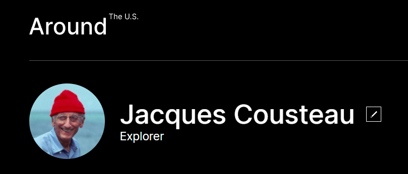
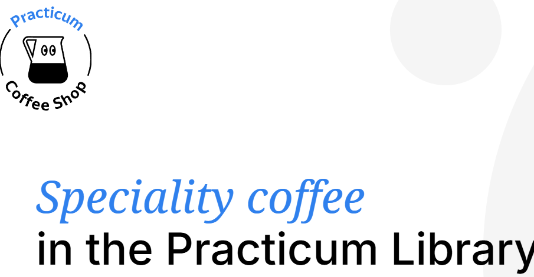

Projects
Project 1
Jacques-Yves Cousteau, AC was a French naval officer, oceanographer, filmmaker and author. He co-invented the first successful open-circuit self-contained underwater breathing apparatus, called the Aqua-Lung, which assisted him in producing some of the first underwater documentaries.
Project 2
Speciality Coffee is a website crafted to showcase and explore various techniques and methodologies used in HTML and CSS. The site serves as a practical example of how different coding strategies and design principles are applied to create a visually appealing and functional web experience. From responsive layouts to advanced styling techniques, Speciality Coffee highlights the diverse ways in which HTML and CSS can be utilized to enhance web design and user interaction.
Project 3

The Little Penguin is a project that demonstrates the creative use of HTML and CSS to bring an animated character to life. This project focuses on using modern web design techniques to create an engaging and interactive penguin animation. By leveraging HTML for structural elements and CSS for styling and animation, The Little Penguin showcases how these technologies can be combined to create a charming, animated friend that enhances user experience through visually appealing and interactive design elements.